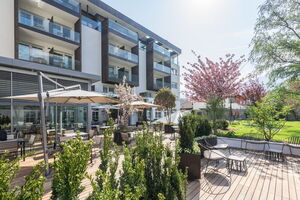

Alpinrunner
Laufwoche Südtirol 2026
Laufwoche Südtirol 2026
vom Samstag 25. April bis Samstag 02. Mai

Hotel Vinschgerhof **** Vetzan-Schlanders
Erleben Sie in unserem 4‑Sterne Hotel Vinschgau alpinen Luxus und echte Gastfreundschaft. Unser Wanderhotel bietet Ihnen moderne, hochwertig ausgestattete Zimmer, ein erstklassiges Wellnessangebot und kulinarische Highlights – ideal für Naturfreunde und Aktivurlauber. Entdecken Sie den Charme des Vinschgaus und genießen Sie unvergessliche Momente in unserem exklusiven Ambiente.
Impressionen von der Laufwoche 2025
Trailrunning Woche Südtirol, Andrian- zu den Fotos


Leiterteam Petra, Marco, Brigitte


Teilnehmer
- aus Datenschutzgründen werden nur Vornamen veröffentlicht
- Petra und Marco
- Brigitte und Thomas
- Dani und Olivia
- Silvia
- Micheline
- Monica und Peter
- Margrit und Jürg
- Anny
- Sabine
- Ruedi
- Markus B.
- Doris und Marcel
- Martin und Isabella
- Barbara und Robi
- Bea und Peter
- Jean-Marie